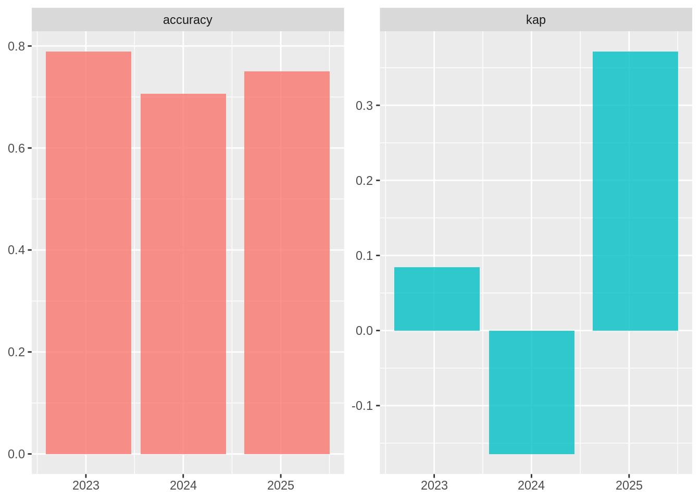

Version, deploy, and monitor your model with vetiver in R
The MLOps cycle

Data scientists have effective tools that they ❤️ to:
collect data
prepare, manipulate, refine data
train models
There is a lack 😩 of effective tools (especially open source) to:
put models into production
monitor model performance
trigger retraining
What is vetiver? https://vetiver.rstudio.com/
Vetiver, the oil of tranquility, is used as a stabilizing ingredient in perfumery to preserve more volatile fragrances.
The goal of vetiver is to provide fluent tooling to version, deploy, and monitor a trained model.
Build a model
Let’s build a model to predict which Scooby Doo episodes have a real monster and which have a fake monster. 👻
library(tidyverse)
library(arrow)
scooby <- read_feather("scooby-do.arrow")
scooby# A tibble: 501 × 4
monster_real year_aired imdb title
* <fct> <dbl> <dbl> <chr>
1 fake 1969 8.1 What a Night for a Knight
2 fake 1969 8.1 A Clue for Scooby Doo
3 fake 1969 8 Hassle in the Castle
4 fake 1969 7.8 Mine Your Own Business
5 fake 1969 7.5 Decoy for a Dognapper
6 fake 1969 8.4 What the Hex Going On?
7 fake 1969 7.6 Never Ape an Ape Man
8 fake 1969 8.2 Foul Play in Funland
9 fake 1969 8.1 The Backstage Rage
10 fake 1969 8 Bedlam in the Big Top
# … with 491 more rowslibrary(tidymodels)
svm_spec <- svm_linear(mode = "classification")
scooby_rec <-
recipe(monster_real ~ year_aired + imdb, data = scooby) %>%
step_normalize(all_numeric_predictors())
svm_fit <-
workflow(scooby_rec, svm_spec) %>%
fit(scooby)Data scientists use tools they love for these steps, like the tidyverse, pandas, tidymodels, scikit-learn, etc.
Version and deploy a model
Create a deployable model object:
library(vetiver)
Attaching package: 'vetiver'The following object is masked from 'package:tune':
load_pkgsv <- vetiver_model(svm_fit, "scooby-doo")
v
── scooby-doo ─ <butchered_workflow> model for deployment
A LiblineaR classification modeling workflow using 2 featuresVersion and share the model:
library(pins)
model_board <- board_rsconnect() ## also support board_s3(), board_azure(), etc
model_board %>% vetiver_pin_write(v)Document the model: https://vetiver.rstudio.com/learn-more/model-card.html
Deploy model as a REST API:
library(plumber)
pr() %>%
vetiver_api(v, debug = TRUE)# Plumber router with 2 endpoints, 4 filters, and 1 sub-router.
# Use `pr_run()` on this object to start the API.
├──[queryString]
├──[body]
├──[cookieParser]
├──[sharedSecret]
├──/logo
│ │ # Plumber static router serving from directory: /home/runner/work/_temp/Library/vetiver
├──/ping (GET)
└──/predict (POST)Deploy to Connect: https://rstudio.github.io/vetiver-r/dev/reference/vetiver_deploy_rsconnect.html
Deploy via Docker (after creating plumber file via
vetiver_write_plumber(model_board, "julia.silge/scooby-doo")):
vetiver_write_docker(v)Build the Docker container (from command line):
docker build --platform linux/amd64 -t scooby-doo .Run the Docker container (from command line):
docker run --env-file .Renviron --rm -p 8000:8000 scooby-dooPredict from a model
Predict for remote vetiver model:
scooby_endpoint <- vetiver_endpoint("http://0.0.0.0:8000/predict")
scooby_endpointnew_episodes <- tidyr::crossing(
year_aired = sample(1970:2000, size = 3),
imdb = sample(5:9, size = 3)
)
new_episodes# A tibble: 9 × 2
year_aired imdb
<int> <int>
1 1975 5
2 1975 6
3 1975 8
4 1986 5
5 1986 6
6 1986 8
7 1988 5
8 1988 6
9 1988 8predict(scooby_endpoint, new_episodes)Monitor your model
To monitor the statistical properties of your model over time, you will need new data with labels. Let’s say that Scooby Doo airs more episodes starting this year:
scooby_validation <- read_feather("scooby-validation.arrow")
scooby_validation# A tibble: 100 × 4
monster_real date_aired year_aired imdb
<fct> <date> <dbl> <dbl>
1 fake 2023-01-11 2023 6.2
2 fake 2023-02-02 2023 5.2
3 fake 2023-02-11 2023 9
4 fake 2023-02-17 2023 6.8
5 fake 2023-02-27 2023 5.2
6 fake 2023-03-10 2023 6.4
7 fake 2023-03-21 2023 5.4
8 fake 2023-04-06 2023 8.4
9 fake 2023-05-04 2023 7.4
10 fake 2023-05-20 2023 7.8
# … with 90 more rowsWe can compute multiple metrics at once over a certain time aggregation.
How does a model use time? 🤔
- Your model sometimes uses date-time quantities as features for prediction (like these Scooby Doo episodes!).
- Monitoring always involves a date-time quantity, not necessarily as a feature, but as a dimension along which you are monitoring.
scooby_metrics <-
augment(v, new_data = scooby_validation) %>%
vetiver_compute_metrics(date_aired, "year", monster_real, .pred_class)
scooby_metrics# A tibble: 6 × 5
.index .n .metric .estimator .estimate
<date> <int> <chr> <chr> <dbl>
1 2023-01-11 38 accuracy binary 0.789
2 2023-01-11 38 kap binary 0.0843
3 2024-01-02 34 accuracy binary 0.706
4 2024-01-02 34 kap binary -0.164
5 2025-01-25 28 accuracy binary 0.75
6 2025-01-25 28 kap binary 0.372 ggplot(scooby_metrics, aes(.index, .estimate, fill = .metric)) +
geom_col(alpha = 0.8, show.legend = FALSE) +
facet_wrap(~.metric, scales = "free") +
labs(x = NULL, y = NULL)
Check out a more realistic monitoring example that uses the dashboard template in vetiver!